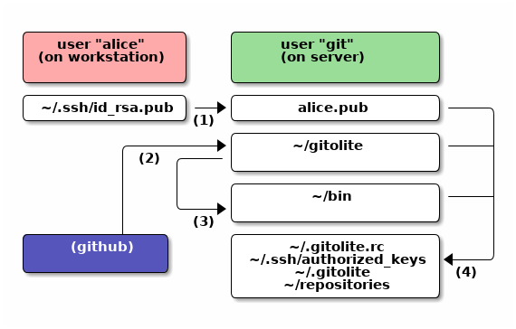

install and setup#
IMPORTANT
Almost nothing in gitolite requires root (with some obvious exceptions).
Unless the documentation says "do this from root", assume it is to be
done from the hosting user account.
This page is about an ssh mode installation. It should work for most people, but if you are an absolute newbie to Unix etc., you may want to click here for a very detailed, step-by-step, hopefully fool-proof set of instructions.
If ssh is not your thing, there's a different page for http mode installation.
before you start... (pre-requisites)#
your skills#
-
Please DO read the concepts and terminology page before doing anything here.
-
If you're installing gitolite, you're a "system admin", like it or not. Since most people use the ssh mode, ssh is therefore a necessary skill. Please take the time to learn at least enough to get passwordless access working.
-
You also need to be somewhat familiar with git itself. You cannot administer a whole bunch of git repositories if you don't know the basics of git.
Please make sure you understand at least the following concepts: bare versus non-bare repos, cloning a repo, making changes and committing them, pushing commits to a 'remote', the special remote called 'origin', difference between a fast-forward push and a rewind push, 'refs' (i.e., branches and tags).
It also helps to understand git's hooks mechanism, git-config, and so on.
-
Some familiarity with Unix and shells is probably required.
-
Regular expressions are a big part of gitolite in many places but familiarity is not necessary to do basic access control.
your server#
- Any Unix system with a posix compatible "sh" and a sane file system.
- Git version 1.6.6 or later.
- Perl 5.8.8 or later (see https://lwn.net/Articles/348084/ if this does not seem to be enough).
-
Openssh (almost any version). Optional if you're using smart http.
- IMPORTANT: although a default openssh config will not do this (AFAIK), do not allow the user to set environment variables if you care about security at all.
-
A dedicated Unix userid to be the hosting user, usually "git" but it can be any user, even your own normal one. (If you're using an RPM/DEB the install probably created one called "gitolite").
you and your users' clients#
- Openssh client.
- Git 1.6.6 or later. Almost any git client will work, as long as it knows how to use ssh keys and send the right one along.
cautions and caveats#
Please take note of the following points:
-
If you're bringing existing repos into gitolite, please see this first.
-
Gitolite expects all the directories and files it manages/uses to be owned by the hosting user and not have strange permissions and ownerships.
-
Gitolite does NOT like it if you fiddle with files and directories it cares about in any way except as directed in the documentation.
-
Gitolite depends on several system-installed packages: openssh, git, perl, sh being the main ones. They should all be configured sensibly and with most of the normal defaults. (For example, if your sshd config says the authorized keys file should be placed in some directory other than the default, expect trouble).
trying out gitolite safely#
If you're not sure if gitolite is right for you or your system, it's easy to take it for a trial run, in ssh mode, and play with all of its features (except mirroring). This is very safe, and does not affect anything on your system permanently.
WARNING: this will clobber these files and
directories in your $HOME. Ideally, you should use a throwaway
userid.
Just create a throw-away userid, log in to it, then run these commands:
git clone https://github.com/sitaramc/gitolite
cd gitolite
prove t/ssh*
You will get an error that forces you to read t/README and set an env var
before the test can proceed. This is intentional; I've had people who don't
pay attention to the "data loss" warning, and then complain that it was not
prominent enough. Forcing them to read a much smaller page appears to focus
their attention better!
If it doesn't work, re-read this page to see if you may have missed something that gitolite requires, or ask for support.
If it works, you get a gitolite installation with 7 gitolite users ("admin", and "u1" through "u6").
Don't forget that the client and the server are all on the same user on the
same machine; we're simulating 7 gitolite users using ssh keys! (How?
Maybe ~/.ssh/config will give you a hint).
URLs look like user:repo, so for example you can clone the admin repo by
git clone admin:gitolite-admin. Remote commands look like ssh u1 info.
So start by cloning the admin repo, and try out whatever you want!
install and setup#
This section talks about installing the software manually (i.e., not using a package manager) and setting it up. The install step gets the code to where you want it. The setup step creates the files and directories gitolite needs, including the special gitolite-admin repo, and makes you an administrator so you can manage it remotely.
If you install gitolite using a package manager, you should check your distro-standard mechanisms or distro-supplied documentation for how to complete the installation.
Important:
On package manager installs: make sure you get gitolite v3.x. The correct package you want may be called "gitolite3", even though "gitolite" also exists. If you want to know what the latest gitolite version is, the gitolite CHANGELOG will tell you.
(a graphical overview)#
Here's a graphical overview of what files/directories are affected by each step in the install+setup process. Alice is installing gitolite, with herself as the administrator.

The files names you see there are only for information. You do not have to do anything to them yourself; in fact you should not! You only need the command for each numbered step shown:
- Copy the admin's pubkey to the server as "alice.pub".
- Run
git clone https://github.com/sitaramc/gitoliteor equivalent. - Run
gitolite/install -ln. - Run
gitolite setup -pk alice.pub.
Note also that you only need ONE real user on the server. In our example it is git. In particular, you do NOT create Unix userids for your gitolite users.
prepare for the install#
The simplest, most foolproof, way of ensuring that your gitolite install +
setup will succeed is to use a brand new userid as the hosting user. If that
is not possible, make sure the following do NOT exist in that user's home
directory: ~/.gitolite.rc, ~/.gitolite, ~/repositories, and
~/.ssh/authorized_keys.
Before you go trashing that authorized keys file, please make sure you know the password to the 'git' user, or know the root password on the machine!
The authorized keys file can exist, actually, as long as none of the keys you intend to use with gitolite are present in it. But again, if you're not an ssh guru, you should probably play safe.
get the software#
Get the software using git-clone:
git clone https://github.com/sitaramc/gitolite
You can use this as is, or you can check out the latest tag to make sure you're running a tagged version instead of just the current 'master'.
install#
Gitolite has one server side command: gitolite. You don't need to place it
anywhere special; in the worst case you can run it with the full path.
"Installation" consists of deciding where to put it:
- Keep the sources anywhere and use the full path to run the
gitolitecommand. - Keep the sources anywhere and symlink just the
gitoliteprogram to some directory on your$PATH. - Copy the sources somewhere and use that path to run the
gitolitecommand.
Option 2 is the best for general use, but here's the scoop on all of them:
# option 1 gitolite/install # option 2 gitolite/install -ln # defaults to $HOME/bin (which is assumed to exist) # ** or ** # or use a specific directory (please supply FULL path): gitolite/install -ln /usr/local/bin # option 3 # (again, please supply a FULL path) gitolite/install -to /usr/local/gitolite/bin
Creating a symlink doesn't need a separate program but 'install' also runs
git describe to create a VERSION file, which can be very important if you
want support :-)
setup#
For the first-time setup, you need to have a public key file (usually from the admin's workstation) ready. If the main gitolite admin's username is "alice", this file should be named "alice.pub" and copied to the server.
Once that is done, run:
gitolite setup -pk alice.pub
If that completes without any warnings, you are done. If it had a warning, you probably supplied a key which already has shell access to the server. That won't work; you'll have to generate and use a different key pair for gitolite access and use host aliases to distinguish between the two. While you're there, read both the ssh pages. Twice.
upgrades#
- Update your clone of the gitolite source.
- Repeat the install command you used earlier (make sure you use the same arguments as before).
- Run
gitolite setup.
After you upgrade gitolite, you may also want to upgrade your rc file
(~/.gitolite.rc). See the rc file documentation for that.
moving servers#
Nothing in any of the gitolite install/setup/etc will ever touch the data in
any repository except the gitolite-admin repo. The only thing it will
normally touch is the update hook. So one fool-proof way of "moving"
servers is this:
-
Clone the latest gitolite-admin repo from the old server to your workstation. Make sure you have an admin key that has RW+ rights to the gitolite-admin repo; you will need this later.
-
Install gitolite on the new server, using the same key for the admin as for the old server.
-
Copy the rc file from the old server, overwriting this one.
-
Disable the old server so people won't push to it.
-
Copy all the repos over from the old server. Make sure the files end up with the right ownership and permissions; if not, chown/chmod them.
The gitolite-admin repo already exists on the new server (it's just a bare bones conf file). Do NOT overwrite it. (Not because it contains anything useful, but because the next step will then fail!)
-
Go to the clone you made in step 1, add a new remote (or change an existing one) to point to the new server, then
git push -fto it. -
Run
gitolite setupon the server.